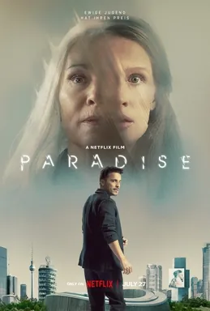

The genetics
This German Netflix film imagines a market in lifespan built on genetic matching. Aeon's procedure can move years of life from one person to another, but only between genetically compatible people, so the company catalogues potential donors from cheek swabs; this database lets its founder, Sophie Theissen, identify her ideal donor years in advance and then trap her into donating. The biotechnology is thus a means by which the rich buy the youth of the poor, and its creator is the film's villain, a cold executive who arranges a fire to get her donor and refuses to help her own daughter. The protagonists are corrupted in turn when they use an illegal clinic and a kidnapped compatible donor to reverse the transfer. Critics noted the film's socially critical premise. Transfer of 'life years' is fiction, but the use of DNA matching to find compatible donors echoes real tissue typing for organ and bone-marrow transplants.
How genetics is portrayed
- Overall portrayal of genetics
- negative The life-transfer biotechnology and its genetic database serve the exploitation of the poor by the rich, and the film ends with its villain thriving and its heroes corrupted.
- Outcome of the genetic intervention
- negative Donors are aged by decades, Elena is forced into donating and loses a pregnancy, and the reversal is achieved only by using a kidnapped young woman.
- Aeon (Sophie Theissen)
- villain Aim: commercial, power (negative). Sophie's company sells the youth of poor donors to the rich, using genetic matching to find compatible donors; she arranges the fire that forces Elena to donate and takes her years for herself, and she survives at the end.
- Dr. Berg
- neutral Aim: not stated (not applicable). The clandestine doctor of an underground organisation reverses Elena's donation using the kidnapped Marie as donor; the sources do not characterise him.
The story
In a near future, the biotech company Aeon, founded by Sophie Theissen, has become a multi-billion corporation by transferring years of life from young, poor donors to wealthy clients, provided donor and recipient are genetically compatible. Max Toma, an Aeon salesman who once sold five of his own years to pay for his studies, lives in luxury with his wife Elena until their flat burns down and the uninsured loan, for which Elena had pledged 40 years of her life, comes due. Elena is taken to Aeon and loses 38 years, ageing into an old woman within days. Max discovers that Sophie chose Elena as her own donor years earlier and arranged the fire. He kidnaps a young woman he takes for the rejuvenated Sophie, who turns out to be her daughter Marie, and plans to use her to restore Elena. After a bloody clash with an anti-Aeon terrorist group, Elena regains her youth from Marie and leaves Max, who becomes the group's new leader.